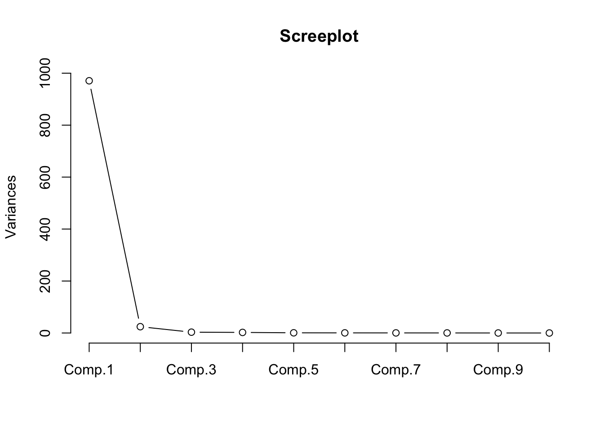
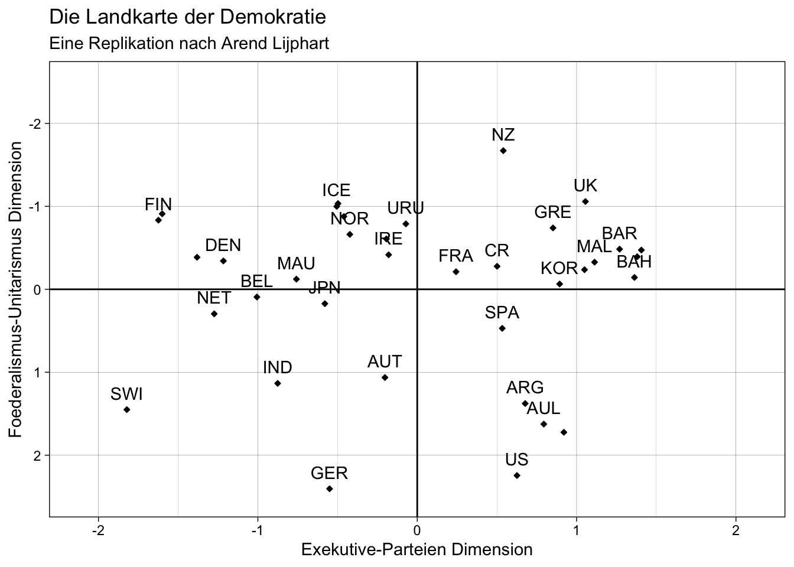

Nachdem wir verschiedene statistische Verfahren kennengelernt haben, um Zusammenhänge zu erkennen und diese visualisiert haben, werden wir uns nun mit der Faktorenanalyse beschäftigen.
Die Faktorenanalyse ist ein multivariates statistisches Verfahren zur Dimensionsreduktion. Diese Reduktion wird dadurch erreicht, dass aus einer Vielzahl an Variablen wenige Faktoren extrahiert werden. Mit der Faktorenanalyse wird Übersichtlichkeit erreicht und Gemeinsamkeiten zwischen den Variablen können gefunden werden. Das Verfahren geht mit Informationsverlust, bei gleichzeitiger Variablenverdichtung, einher.
Auch Arend Lijphart hat die Faktorenanalyse in “Patterns of Democracy” angewandt. Sein Ergebnis visualisierte er mit der “Landkarte der Demokratie”, mit welcher demokratische Länder anhand von zwei Dimensionen eingeordnet werden können. Zudem konnte er zwischen Konsens- und Mehrheitsdemokratien unterscheiden. In dieser Sitzung werden wir Lijpharts Faktorenanalyse replizieren.
Dazu müssen Sie zunächst die nötigen Pakete und Daten laden und einige Variablen umkodieren.
# Pakete laden
library(Hmisc)
library(foreign)
library(ggplot2)
library(stats)# Daten einlesen
getwd()
setwd("eigener Pfad")
lijphart <- read.csv2("Lijphart_Data_recode.csv")Zusätzlich zu den Datentransformationen der letzten Sitzungen müssen wir noch einige weitere Variablen umkodieren.
# 1. Zweiparteiensystem vs. Mehrparteiensystem
# (ENPP)
lijphart$enpp4510 <- as.numeric(lijphart$enpp4510)
# 2. Einparteienkabinette vs. Koalitionsregierungen
# (Mittelwert Regierungsdauer Minimal-Winning Koalition und Einparteienkabinette)
lijphart$minwin_one_part4510 <- as.numeric(lijphart$minwin_one_part4510)
# 3. Exekutivdominanz vs. dominante Legislative
# (Durchschnittliche Lebensdauer von Kabinetten)
lijphart$exe_dom4510 <- as.numeric(lijphart$exe_dom4510)
# 4. Mehrheitswahlrecht vs. Verhältniswahlrecht
# (Gallagher-Index der elektoralen Disproportionalität)
lijphart$disprop4510 <- as.numeric(lijphart$disprop4510)
# 5. Pluralistische vs. korporatistische Interessenvertretung
# (Korporatismus-Index nach Siaroff)
lijphart$inter_gr_plural4510 <- as.numeric(lijphart$inter_gr_plural4510)
# 6. Unitarisch-zentralisiert vs. Föderaldezentralisiert
# (Skala von 1 bis 4 (zentral unitarisch bis föderal und dezentral))
lijphart$fed_unit4510 <- as.numeric(lijphart$fed_unit4510)
# 7. Unikameralismus vs. Bikameralismus
# Skala von 1 bis 4, (unikameral bis stark bikameral)
lijphart$bicam4510 <- as.numeric(lijphart$bicam4510)
# 8. Flexible vs. Rigide Verfassungen
# (Skala von 1 bis 4, (einfach, absolut, super, größer super))
lijphart$const_rigid4510 <- as.numeric(lijphart$const_rigid4510)
# 9. Keine Normenkontrolle vs. Normenkontrolle durch Verfassungsgericht
# (Skala von 1 bis 4, vergeben nach Sekundärliteratur)
lijphart$judic_rev4510 <- as.numeric(lijphart$judic_rev4510)
# 10. Abhängige vs. Unabhängige Zentralbank
# (Grad Zentralbankautonomie (Indizies Cukierman, Grilli…))
lijphart$cen_bank_indep4594 <- as.numeric(lijphart$cen_bank_indep4594)Grundsätzlich ist die Auswahl der Variablen wichtig, weil sie in einem hohen Maße den Erfolg der Faktorenanalyse bestimmt. Lijphart nutzt für seine Faktorenanalyse zehn Variablen. Es sind die Variablen, die wir zuvor umkodiert haben.
Aus diesen Variablen erstellen wir ein subset.
sub_lijphart <- lijphart[, c("enpp4510", "minwin_one_part4510", "exe_dom4510",
"disprop4510", "inter_gr_plural4510",
"fed_unit4510", "bicam4510", "const_rigid4510", "judic_rev4510", "cen_bank_indep4594")]
head(sub_lijphart)## enpp4510 minwin_one_part4510 exe_dom4510 disprop4510 inter_gr_plural4510
## 1 3.15 82.4 8.00 17.98 2.70
## 2 2.22 80.7 9.10 9.44 2.12
## 3 2.68 43.3 8.07 2.51 0.38
## 4 1.69 100.0 9.44 16.48 3.00
## 5 1.68 100.0 8.87 17.27 2.20
## 6 4.72 37.3 2.57 3.35 1.15
## fed_unit4510 bicam4510 const_rigid4510 judic_rev4510 cen_bank_indep4594
## 1 1.38 4.0 4 2.7 0.39
## 2 1.63 4.0 4 3.0 0.42
## 3 1.07 2.0 3 3.0 0.55
## 4 -0.15 2.0 3 2.0 0.41
## 5 -0.49 2.0 2 2.0 0.38
## 6 0.10 2.8 3 1.8 0.27Generell sind nur Variablen, welche miteinander korrelieren, fähig zur Bündlung. Daher folgt nach der Variablenauswahl die Berechnung einer Korrelationsmatrix. In R geht dies mit folgendem Code:
cor_matrix <- rcorr(as.matrix(sub_lijphart))
cor_matrix## enpp4510 minwin_one_part4510 exe_dom4510 disprop4510
## enpp4510 1.00 -0.85 -0.79 -0.57
## minwin_one_part4510 -0.85 1.00 0.78 0.58
## exe_dom4510 -0.79 0.78 1.00 0.55
## disprop4510 -0.57 0.58 0.55 1.00
## inter_gr_plural4510 -0.61 0.71 0.51 0.61
## fed_unit4510 0.00 -0.07 0.08 0.09
## bicam4510 0.09 -0.03 0.10 0.09
## const_rigid4510 -0.08 0.00 0.11 0.17
## judic_rev4510 -0.24 0.17 0.18 0.36
## cen_bank_indep4594 -0.04 -0.15 -0.02 -0.12
## inter_gr_plural4510 fed_unit4510 bicam4510 const_rigid4510
## enpp4510 -0.61 0.00 0.09 -0.08
## minwin_one_part4510 0.71 -0.07 -0.03 0.00
## exe_dom4510 0.51 0.08 0.10 0.11
## disprop4510 0.61 0.09 0.09 0.17
## inter_gr_plural4510 1.00 0.00 0.07 0.01
## fed_unit4510 0.00 1.00 0.76 0.74
## bicam4510 0.07 0.76 1.00 0.38
## const_rigid4510 0.01 0.74 0.38 1.00
## judic_rev4510 0.26 0.71 0.41 0.46
## cen_bank_indep4594 -0.10 0.71 0.38 0.38
## judic_rev4510 cen_bank_indep4594
## enpp4510 -0.24 -0.04
## minwin_one_part4510 0.17 -0.15
## exe_dom4510 0.18 -0.02
## disprop4510 0.36 -0.12
## inter_gr_plural4510 0.26 -0.10
## fed_unit4510 0.71 0.71
## bicam4510 0.41 0.38
## const_rigid4510 0.46 0.38
## judic_rev4510 1.00 0.34
## cen_bank_indep4594 0.34 1.00
##
## n= 36
##
##
## P
## enpp4510 minwin_one_part4510 exe_dom4510 disprop4510
## enpp4510 0.0000 0.0000 0.0003
## minwin_one_part4510 0.0000 0.0000 0.0002
## exe_dom4510 0.0000 0.0000 0.0005
## disprop4510 0.0003 0.0002 0.0005
## inter_gr_plural4510 0.0000 0.0000 0.0015 0.0000
## fed_unit4510 0.9897 0.6810 0.6512 0.5876
## bicam4510 0.6004 0.8662 0.5713 0.5918
## const_rigid4510 0.6569 0.9899 0.5308 0.3108
## judic_rev4510 0.1661 0.3215 0.2907 0.0322
## cen_bank_indep4594 0.8199 0.3718 0.9287 0.4862
## inter_gr_plural4510 fed_unit4510 bicam4510 const_rigid4510
## enpp4510 0.0000 0.9897 0.6004 0.6569
## minwin_one_part4510 0.0000 0.6810 0.8662 0.9899
## exe_dom4510 0.0015 0.6512 0.5713 0.5308
## disprop4510 0.0000 0.5876 0.5918 0.3108
## inter_gr_plural4510 0.9852 0.6671 0.9738
## fed_unit4510 0.9852 0.0000 0.0000
## bicam4510 0.6671 0.0000 0.0206
## const_rigid4510 0.9738 0.0000 0.0206
## judic_rev4510 0.1229 0.0000 0.0135 0.0043
## cen_bank_indep4594 0.5464 0.0000 0.0241 0.0217
## judic_rev4510 cen_bank_indep4594
## enpp4510 0.1661 0.8199
## minwin_one_part4510 0.3215 0.3718
## exe_dom4510 0.2907 0.9287
## disprop4510 0.0322 0.4862
## inter_gr_plural4510 0.1229 0.5464
## fed_unit4510 0.0000 0.0000
## bicam4510 0.0135 0.0241
## const_rigid4510 0.0043 0.0217
## judic_rev4510 0.0416
## cen_bank_indep4594 0.0416Diese Korrelationsmatrix wird in R in mehreren Zeilen angezeigt, weil sie zu groß ist. Um ein übersichtlicheres Ergebnis zu erhalten, müssten Sie die Grafik mit Excel, Word o.Ä. aufarbeiten. Durch eine Aufarbeitung würden Sie ein ähnliches Ergebnis wie Lijphart erhalten und könnten dann zwei Dreiecke erkennen. In diesen Dreicken wärem die Werte durchweg signifikant. Trotzdem werden die Ihnen jetzt vorliegende Korrelationsmatrix und jene von Lijphart nicht identisch sein. Dies liegt an statistischen Ungenauigkeiten und daran, dass verschiedene Statistikprogramme unterschiedliche Algorithmen nutzen.
Nachdem wir die Variablen für unsere Analyse ausgewählt und die Voraussetzungen geprüft haben, können wir zunächst eine Hauptkomponentenanalyse durchführen. Die Hauptkomponentenanalyse dient zur Strukturierung von Daten, nicht zur Dimensionsreduktion. Doch sie ist notwendig, um die Anzahl der Faktoren statistisch festzulegen.
model_princomp <- princomp(sub_lijphart)
print(model_princomp$loadings, digits = 2)##
## Loadings:
## Comp.1 Comp.2 Comp.3 Comp.4 Comp.5 Comp.6 Comp.7 Comp.8
## enpp4510 0.11 0.31 0.32 0.87
## minwin_one_part4510 -0.99 0.12
## exe_dom4510 -0.85 -0.49 0.15
## disprop4510 -0.12 -0.98 0.11
## inter_gr_plural4510 0.19 -0.46 -0.85 0.11
## fed_unit4510 -0.31 0.51
## bicam4510 -0.28 0.45 0.70 0.18 -0.27
## const_rigid4510 -0.24 0.39 -0.59 0.46 -0.37
## judic_rev4510 -0.14 0.36 -0.19 -0.66 0.36 0.34
## cen_bank_indep4594
## Comp.9 Comp.10
## enpp4510 0.13
## minwin_one_part4510
## exe_dom4510
## disprop4510
## inter_gr_plural4510
## fed_unit4510 0.74 -0.27
## bicam4510 -0.36
## const_rigid4510 -0.31
## judic_rev4510 -0.35
## cen_bank_indep4594 0.30 0.95
##
## Comp.1 Comp.2 Comp.3 Comp.4 Comp.5 Comp.6 Comp.7 Comp.8 Comp.9
## SS loadings 1.0 1.0 1.0 1.0 1.0 1.0 1.0 1.0 1.0
## Proportion Var 0.1 0.1 0.1 0.1 0.1 0.1 0.1 0.1 0.1
## Cumulative Var 0.1 0.2 0.3 0.4 0.5 0.6 0.7 0.8 0.9
## Comp.10
## SS loadings 1.0
## Proportion Var 0.1
## Cumulative Var 1.0Mit der Funktion princomp() können wir in R die Hauptkomponentenanalyse durchführen. Dazu müssen wir lediglich unser subset sub_lijphart angeben. Mit der zweiten Zeile Code gibt R die gerundeten Faktorladungen aus. Die Faktorladungen geben an, wie hoch die Erklärungskraft eines Faktors für die Varibalen ist.
Um die Faktorenanalyse zu optimieren, kann die Anzahl der Faktoren geschätzt werden. Neben der Bestimmung der Anzahl der Faktoren in Form einer theoriebasierten Schätzung, können wir auch bestimmte statistische Tests nutzen. Eine einfache Möglichkeit ist die Auswertung eines Screeplots.
Das Screeplot ist eine Visualisierung der Eigenwerte in einem Koordinatensystem. Die Eigenwerte geben wieder, wie bedeutsam ein Faktor ist. Bei dem Screeplot sind sie absteigend geordnet. Die Anzahl der Faktoren erkennt man an dem Knick. Dieser Knick ist die größte Differenz der Eigenwerte zwischen zwei Variablen. Hier ist der erste Punkt links des Knickes gleich der Anzahl der Variablen. In diesem Fall ergibt die Auswertung des Screeplotes, dass zwei Faktoren am besten für unsere Analyse geeignet sind.
screeplot(model_princomp,
type = "lines",
main = "Screeplot")
Durch die Bestimmung der Anzahl der Faktoren können wir diese mit in unsere Analyse einbinden. Dazu nutzen wir eine Faktorenanalyse. In R geht dies über die Funktion factanal().
model_factanal <- factanal(sub_lijphart, 2, rotation = "varimax", scores = "regression")
print(model_factanal, round = 2, cutoff = .3)##
## Call:
## factanal(x = sub_lijphart, factors = 2, scores = "regression", rotation = "varimax")
##
## Uniquenesses:
## enpp4510 minwin_one_part4510 exe_dom4510 disprop4510
## 0.187 0.104 0.306 0.568
## inter_gr_plural4510 fed_unit4510 bicam4510 const_rigid4510
## 0.477 0.005 0.432 0.455
## judic_rev4510 cen_bank_indep4594
## 0.439 0.488
##
## Loadings:
## Factor1 Factor2
## enpp4510 -0.902
## minwin_one_part4510 0.944
## exe_dom4510 0.829
## disprop4510 0.650
## inter_gr_plural4510 0.723
## fed_unit4510 0.998
## bicam4510 0.753
## const_rigid4510 0.736
## judic_rev4510 0.708
## cen_bank_indep4594 0.711
##
## Factor1 Factor2
## SS loadings 3.410 3.130
## Proportion Var 0.341 0.313
## Cumulative Var 0.341 0.654
##
## Test of the hypothesis that 2 factors are sufficient.
## The chi square statistic is 75.27 on 26 degrees of freedom.
## The p-value is 1.1e-06Der Befehl factanal() für die Faktorenanalyse besteht aus den Variablen, der Anzahl der Faktoren und der Rotationsmethode. Dabei wählen wir als Erstes unser subset sub_lijphart als unsere Variablen aus. Es folgt die Anzahl der Faktoren. Zudem kann durch das Argument rotation die Rotationsmethode ausgewählt werden. Die Rotationsmethode beeinflusst das Endergebnis unserer Analyse. In diesem Fall verwenden wir varimax als orthogonale Rotationsmethode. Lijphart hat sich für diese Rotationsmethode entschieden, weil sie sicherstellt, dass die Faktoren unabhängig voneinander sind. Indem wir das Argument scores auf regression setzen, können wir zusätzlich die Faktorwerte errechnen lassen. Diese werden wir für die Visualisierung benötigen.
Mit der Funktion print fordern wir R dazu auf, das Ergebnis der Faktorenanalyse auszugeben. Dabei legen wir mit dem Argument digits die Anzahl der Rundungsziffern fest. Zudem können wir mit cutoff bestimmen, ab welcher Grenze die Ergebnisse nicht mehr angezeigt werden sollen. So können wir die Übersichtlichkeit unserer Faktorenanalyse erhöhen.
Der Output der Faktorenanalyse gibt die gewünschte Anzahl an Faktoren und ihre Faktorenladungen für die zehn Variablen wieder. Aufgabe des Forschenden ist es nun, die Faktoren inhaltlich zu interpretieren. In der Regel wird nach Gemeinsamkeiten der Variablen gesucht. Lijphart nennt den ersten Faktor die Exekutive-Parteien-Dimension und den zweiten Faktor die Föderalismus-Unitarismus-Dimension.
Lijphart fasst seine Ergebnisse der Faktorenanalyse in einer “Landkarte der Demokratie” zusammen. Dort können die Demokratien, welche er untersucht, mithilfe der beiden Dimensionen eingeordnet werden. Es entsteht ein Schaubild, in welchem Demokratien eingeordnet und miteinander verglichen werden können.
Diese Form der Visualisierung wird “mapping” genannt. Wir können sie mit R replizieren. Hierzu benötigen wir die Faktorwerte. Die Faktorwerte geben wieder, wie stark die Untersuchungseinheiten von den Faktoren erfasst werden. Das bedeutet in diesem Fall, wie gut eine Demokratie von der Exekutive-Parteien-Dimension und der Föderalismus-Unitarismus-Dimension beschrieben werden. Die Faktorenwerte können in R mit folgendem Code ausgegeben werden:
# Faktorwerte ausgeben lassen
head(model_factanal$scores)## Factor1 Factor2
## [1,] 0.6774763 1.37722672
## [2,] 0.7943245 1.62520783
## [3,] -0.2026600 1.06350614
## [4,] 1.3630201 -0.14260879
## [5,] 1.2698724 -0.48422545
## [6,] -1.0058544 0.09310261Um die “Landkarte der Demokratie” nachzustellen, müssen wir zunächst einen Dataframe erstellen. Dazu nutzen wir die Funktion as.data.frame() und erstellen ein neues Objekt. Danach erstellen wir die Grafik, indem wir das Paket ggplot2 nutzen. Um unsere Replikation mit Lijpharts “Landkarte der Demokratie” vergleichbarer zu machen, passen wir sie etwas an. Wir verändern die Datenpunkte über geom_point(), indem wir sie mit dem Argument size verkleinern, mit shape die Form zu einer Raute ändern und diese mit fill schwarz ausfüllen. Zudem beschriften wir unsere Datenpunkte, um prüfen zu können, ob sie in etwa der Position von Lijpharts Datenpunkten übereinstimmen. Dazu nutzen wir geom_text (). Zunächst legen wir mit label die Daten für unsere Beschriftung fest. Danach können wir die Beschrftung mit nudge_y auf der y-Achse verschieben. Das Argument check_overlap dient dazu, das Überlappen von Beschriftungen zu vermeiden. Mit geom_hline() und geom_vline() können wir eine horizontale und eine vertikale Linie an der Stelle 0 zeichnen. Dadurch wird die Einordnung der Demokratien erleichtert. Anschließend definieren wir mit labs() die Achsenbeschriftungen, den Titel und den Untertitel. Durch coord_cartesian() können wir das Koordinatensystem an der x-Achse spiegeln, indem wir die Definitionsränder von xlim von negativ nach positiv anordnen. Schließlich bestimmen wir mit theme_linedraw() das Design für unsere Grafik.
# Dataframe erstellen
scores_data <- as.data.frame(model_factanal$scores)
# Visualisierung
plot <- ggplot(data = scores_data, aes(x = Factor1, y = Factor2)) +
geom_point(size = 1, shape = 23, fill = "black") +
geom_text(aes(label = lijphart$Country),
nudge_y = -.2,
check_overlap = T) +
geom_hline(yintercept = 0) +
geom_vline(xintercept = 0) +
labs(x = "Exekutive-Parteien Dimension",
y = "Foederalismus-Unitarismus Dimension",
title = "Die Landkarte der Demokratie",
subtitle = "Eine Replikation nach Arend Lijphart") +
coord_cartesian(ylim = c(2.5, -2.5), xlim = c(-2.1, 2.1)) +
theme_linedraw()
plot
# Grafik speichern
ggsave("Landkarte der Demokratie.png")Anschließend speichern wir die Grafik mit ggsave() in unserer working directory.
Bitte beachten Sie, dass die Linien in der von Ihnen replizierten “Landkarte der Demokratie” je nach Betriebssystem in R anders ausgegeben werden können. In der abgespeicherten Grafik sollten die Linien dann wie die in diesem Tutorial aussehen.
Nun können wir unsere “Landkarte der Demokratie” mit jener von Arend Lijphart aus “Patterns of Democracy” vergleichen. Es fällt auf, dass die Grafiken starke Gemeinsamkeiten aufweisen. Jedoch sind einige Demokratien in unserer Grafik verschoben, z.B. liegt Argentinien bei uns etwas weiter links als bei Lijphart. Das liegt daran, dass Faktorenanalysen in verschiedenen Statistikprogrammen mit unterschiedlichen Algorithmen berechnet werden.
In dieser Sitzung konnten Sie mit R die Faktorenanalyse von Arend Lijphart aus “Patterns of Democracy” replizieren. Dazu haben Sie alle relevanten Variablen umkodiert und aus ihnen ein subset erstellt. Mit der Funktion princomp() konnten Sie eine Hauptkomponentenanalyse durchführen. Dadurch gelang es Ihnen, ein Screeplot zu zeichnen und die Anzahl der Faktoren zu bestimmen, sodass Sie eine Faktorenanalyse durchführen konnten. Dabei haben Sie die Rotationsmethode und die Anzahl der Faktoren festgelegt. Zum Schluss haben Sie Ihre Ergebnisse visualisieren können, indem Sie Lijpharts “Landkarte der Demokratie” repliziert haben.
Verändern Sie die Anzahl der Faktoren zu:
Erstellen Sie ein neues subset mit allen Variablen aus sub_lijphart außer der Variablen der Interessenvertretung. Führen Sie eine Faktorenanalyse mit zwei Faktoren durch. Wie wirkt sich die Reduktion auf Ihre Ergebnisse aus? Ziehen Sie den Vergleich zu Ihrer replizierten Faktorenanalyse. Erstellen Sie dazu auch eine Visualisierung, welche Sie mit der replizierten “Landkarte der Demokratie” vergleichen.
Replizieren Sie die Faktorenanalyse erneut. Verwenden Sie dabei alle Untersuchungseinheiten außer die Demokratien Großbritannien und Neuseeland. Erstellen Sie eine Visualisierung. Welche Veränderungen können Sie beobachten? Vergleichen Sie dazu Ihre Ergebnisse mit Ihrer replizierten Faktorenanalyse.